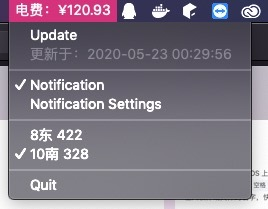

Monitoring the energy charge work on macOS in CJLU.
如何在没接触过 macOS 开发的情况下 4 个小时写一个学校爬电费状态栏 App
GitHub链接-Energy_Charge_in_MacOS
About Energy_Charge
- There is Docker version.
2020-05-23 00:35 更新
连接错误变灰
低电费变红
其他寝室

缘起
学校寝室里配了台台式，写了大半学期的 iOS，这一切都如此顺利。
不过就在刚刚，一位大佬朋友突然向我展示了他找到的查寝室电费网址 POST 参数。这不禁让我陷入了思考（因为平常我得经常看着点电费不然没电费了电脑黑屏警告233）。然后我顺便查了下我们寝室的电费，nm只有 1 块 5 了！！！
开发一个 macOS 的爬电费 App 就这样开始了。
—- 四个小时前
Hardworking…
Xcode - File - New - Project…
然后选择 macOS App，这一切看起来如此自然，然而第一个困扰我的出现了 — url request 如何实现。
一向喜欢用第三方库的我，果不其然又发现了一个好用的 url request 库，它叫 Alamofire。这个库用来写请求超级超级容易，不过我完全不知道请求完成后得到的 request 应该怎么用，后来找到它的文档这里

噢，原来我获得的就是这个网址的 JSON 数据，我只需要使用官方的 JSONSerialization 类就行了，于是我就写成了下面这样，把 JSON 转换 NSDictionary 一层层不断获取，成功得到了电费数值，并将它们写到一个类里去，加了一些代理以便其他类能够得到电费变更通知或错误通知。
可能你们都看到了，我设定了一个定时器每隔 5 分钟获取一次数据（虽然不知道会不会有电脑睡眠断定时器之类的问题毕竟这是1.0版本不想考虑那么多），于是我寻思还需要增加一个手动更新数据的位置，而且查看数据肯定要一个方便的位置，emmmm，就状态栏吧，看那么多应用都在上面应该没啥问题。。。
于是，第二个难点。。。如何在状态栏显示内容。
其实了解之后还是很简单，在 Storyboard 加一个菜单列表就行了，然后在一个新的类里把这个菜单设为状态栏菜单。看起来挺简单吧，操作起来也挺简单的。
好了，四个小时过去了，这个小插件其实很简单，但自己也学到了不少。